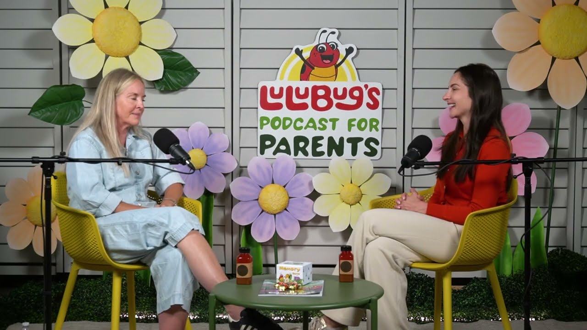

New episode · Podcast for Parents
"This Is Too Hard!" How to Build Persistence Through Frustration

30 minEvery parent knows the moment.
The tower of blocks finally topples, and the meltdown is instant. In this episode, Jil and Dr. Karen unpack why that frustration isn't a lack of resilience, and the small moves that help a child push through instead of giving up.
Watch the episodeor
See you in the Garden,
Jil & Dr. Karen